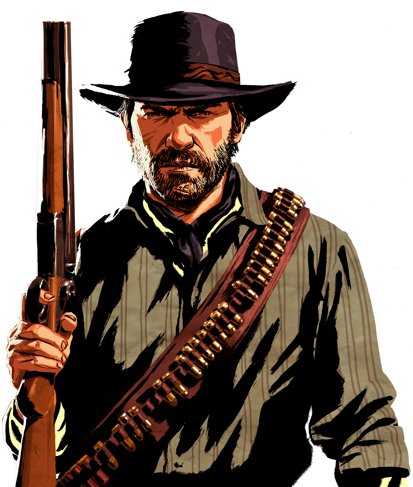
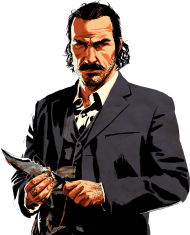
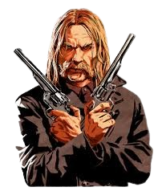
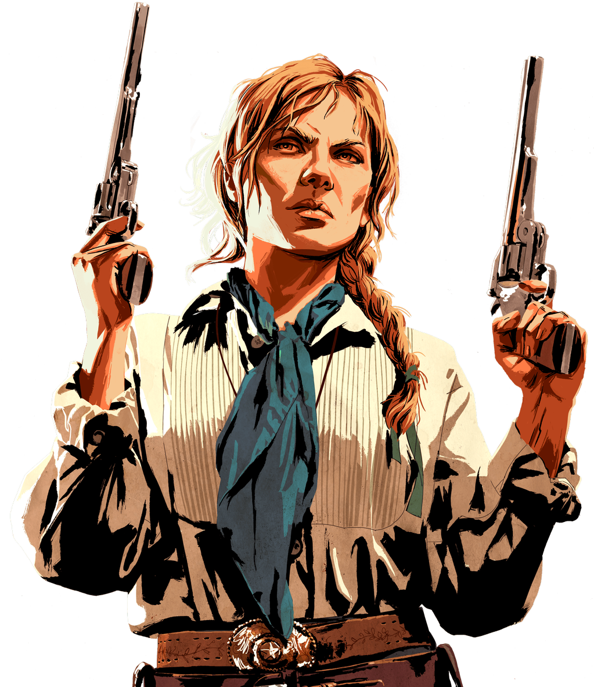
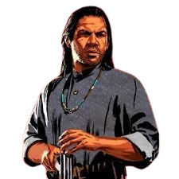
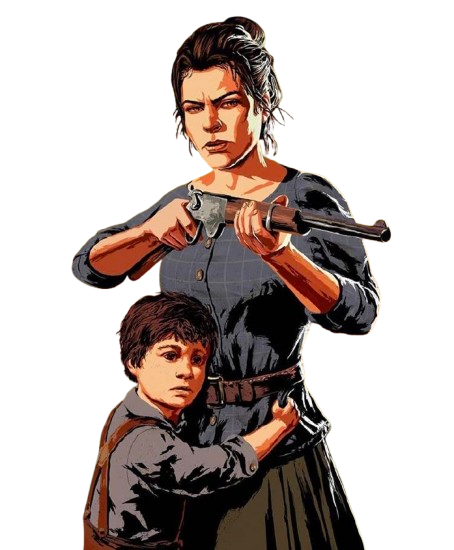
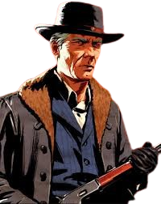
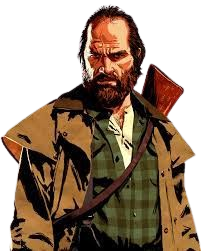
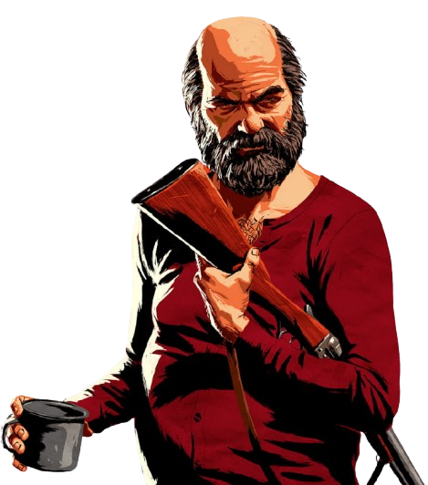

Developers

Red Dead Redemption 2 (RDR2) was developed by Rockstar Games, specifically by their in-house team, Rockstar Studios. This studio is a collaboration of various development teams across different Rockstar offices worldwide, including locations in New York, San Diego, Toronto, and others. The game was published by Rockstar Games and is known for its detailed open-world design, storytelling, and complex characters. The lead developers, writers, and directors of the game include Dan Houser (head writer and co-founder of Rockstar Games), Michael Unsworth, and Rupert Humphries, along with many others who contributed to its success.

Arthur Morgan
Arthur Morgan is a skilled and rugged outlaw, known for his loyalty to his gang and complicated moral code. He struggles with his violent past while seeking a sense of purpose and redemption. Arthur is a deeply layered character, balancing toughness with moments of introspection and compassion

John Marston
John Marston is a former outlaw who tries to leave his criminal past behind to build a better life for his family. A skilled gunslinger, he is torn between loyalty to his old gang and his desire for redemption. John's journey is marked by resilience, struggle, and moral conflict.

Dutch Van Der Linde
Dutch Van der Linde is the charismatic but increasingly unstable leader of the Van der Linde gang. Idealistic yet manipulative, he believes in freedom from government control and dreams of a utopia for outlaws. As pressure mounts, Dutch's decisions become erratic, leading his gang toward betrayal, chaos, and eventual collapse.

Micah Bell
Micah Bell is a ruthless and treacherous member of the Van der Linde gang. Self-serving and manipulative, he sows discord among the group, exploiting Dutch’s trust. Micah's ambitions and lack of loyalty make him a dangerous figure, ultimately betraying the gang for his own gain and leading to its downfall.

Sadie Adler
Sadie Adler is a fearless and determined member of the Van der Linde gang, driven by vengeance after her husband’s murder. Initially grieving and vulnerable, she evolves into a fierce gunslinger, displaying unwavering loyalty and independence. Sadie’s journey is marked by her transformation from a widow to a formidable outlaw.

Charles Smith
Charles Smith is a half-Black, half-Indian member of the Van der Linde gang, known for his strong sense of morality and survival skills. A skilled tracker and fighter, he often serves as a voice of reason within the group. Charles embodies resilience and loyalty, showcasing depth and compassion in a harsh world.

Jack and Abigail
Jack Marston is the son of John and Abigail Marston, representing innocence and the hope for a better future. Abigail, a strong-willed woman, embodies resilience and maternal strength, often struggling to protect her family amidst chaos. Their relationship highlights themes of love, sacrifice, and the pursuit of a peaceful life.

Hosea matthews
Hosea Matthews is a seasoned member of the Van der Linde gang, serving as a father figure to Arthur Morgan. Known for his wisdom and strategic thinking, he often provides guidance. Hosea’s charm and resourcefulness make him beloved, and his tragic fate underscores the personal losses of their outlaw life.

Bill Williamson
SBill Williamson is a loyal but troubled member of the Van der Linde gang, known for his violent tendencies and impulsiveness. A former soldier, he struggles with insecurity while seeking validation from his peers. Bill’s character adds complexity to the gang dynamics, highlighting the challenges of their outlaw lifestyle.

Uncle
Uncle, whose full name is Uncle (real name not explicitly revealed), is a comedic and laid-back member of the Van der Linde gang. He often provides comic relief with his laziness and humorous antics, yet he also represents the human side of the gang. Despite his unreliable nature, Uncle is deeply loyal to his family and contributes to the gang’s dynamic. His character adds a unique blend of levity amid the more serious themes of the story.
RDR2
Red Dead Redemption 2 is an epic Western tale set in 1899, focusing on Arthur Morgan, a skilled outlaw and a member of the Van der Linde gang. The gang, led by the charismatic Dutch Van der Linde, is trying to survive in a rapidly changing America where outlaws are becoming a thing of the past. They’re constantly on the run from law enforcement and rival gangs, leading to intense conflicts and adventures across diverse landscapes, from snowy mountains to bustling towns and vast plains. Arthur faces personal struggles and moral dilemmas, questioning his loyalty and identity while being forced to confront the consequences of his lifestyle. As the story unfolds, Arthur and the gang grapple with loyalty, honor, and survival, highlighting the complex bonds within the gang and the harsh realities of a fading Wild West.
.png)
.png)
.png)
.png)